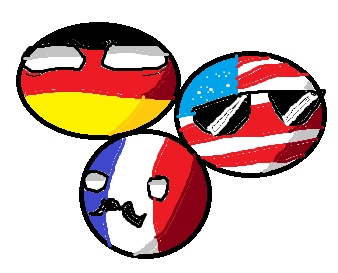

I'm Mads Purzner, a sophomore at South Shore in Port Wing, Wisconsin. This site is where I share my interests and thoughts.
About Me:
I'm a student with a passion for gaming, music, and films. When I'm not hitting the books, you can usually find me
dropping into Fortnite battles,
headbanging to some funk or sludge metal,
or binge watching my favorite films.
For gaming,
Fortnite is my go-to game. I love the fast-paced action and the constant updates that keep things fresh. Maybe we'll cross paths on the battlefield sometime!
My taste in music is eclectic, but I have a special place in my heart for
funk metal,
sludge metal, and
jam bands.
Primus is one of my all-time favorite bands. Their unique sound and Les Claypool's incredible bass skills never fail to amaze me.
Films:
I'm a bit of a film buff, with a particular love for
comedies,
film noir,
musicals,
and horror.
Feel free to reach out if you want to chat about any of these topics or if you want recommendations for new music or movies to check out! This whole bit was written by claude.ai

I also like drawing! I made the image below in mspaint during this class. (So cool)